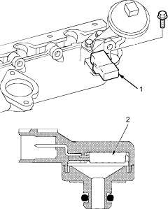
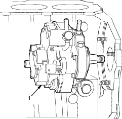

Manifold Absolute Pressure (MAP) Sensor
The MAP sensor converts manifold absolute pressure into electrical signals to the ECM.

- MAP SENSOR
- SENSOR UNIT
Accelerator Pedal Position (APP) Sensor
The APP sensor is a potentiometer connected to the accelerator. As the accelerator pedal position changes, the sensor varies the signal voltage to the ECM.
Vehicle Speed Sensor (VSS)
The VSS is driven by the differential. It generates a pulsed signal from an input of 12 volts. The number of pulses per minute increases/decreases with the speed of the vehicle.
Brake Pedal Position Switch
The brake pedal position switch signals the ECM when the brake pedal is pressed.
Fuel Supply System
Supply Pump Control
When the ignition is turned on, the ECM grounds the main relay which feeds current to the supply pump for 2 seconds to pressurise the fuel system. With the engine running, the ECM grounds the main relay and feeds current to the supply pump. When the engine is not running and the ignition is ON (II), the ECM cuts ground to the main relay which cuts current to the supply pump.

- SUPPLY PUMP
Intake Air System
Refer to the System Diagram to see the functional layout of the system.
Exhaust Gas Recirculation (EGR) System
Refer to the System Diagram to see the functional layout of the system.
EGR Valve
The EGR valve is designed to lower peak combustion temperatures and reduce oxides of nitrogen emissions (NOx) by recalculating exhaust gas through the intake manifold and into the combustion chambers.
Positive Crankcase Ventilation (PCV) System
The PCV valve prevents blow-by gasses from escaping into the atmosphere by venting them into the intake manifold.